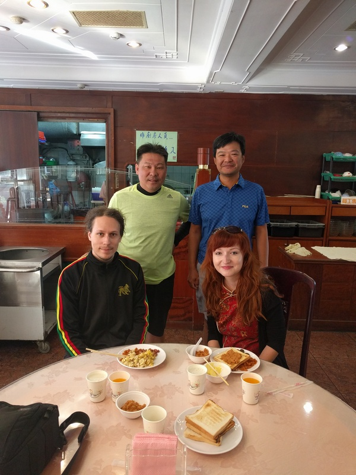
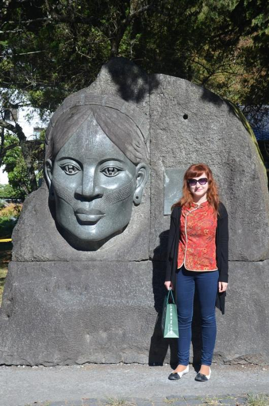
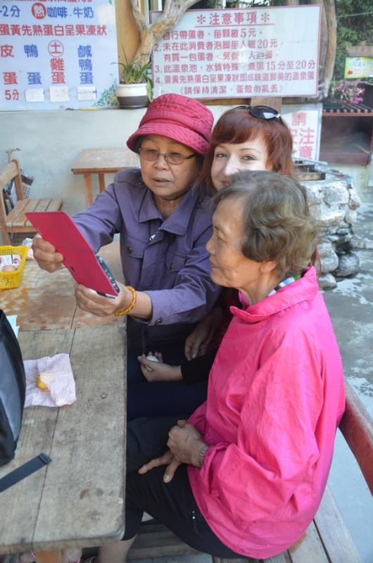
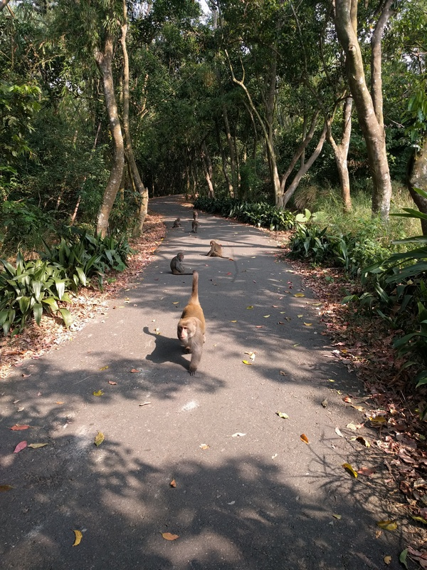
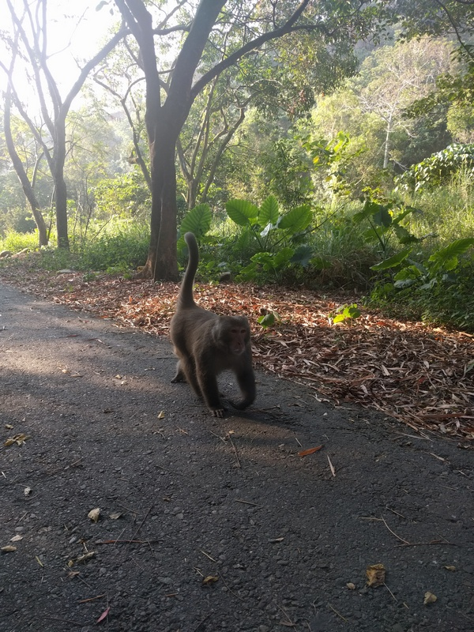
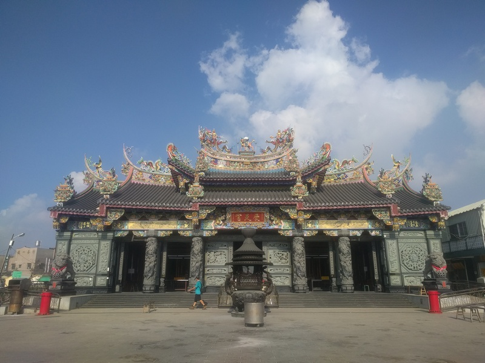
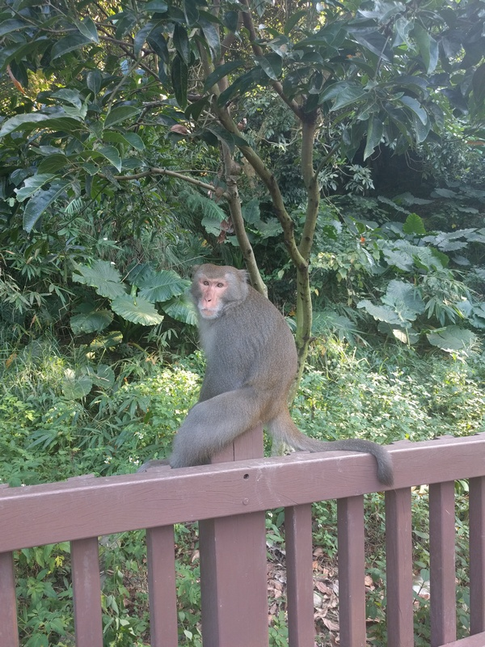

Od naší cesty na Taiwan uplynulo už čtvrt roku a já mám stále co vyprávět. Snad to tedy někoho z vás ještě baví číst :-)
Ráno v Lushanu bylo krásné a slunečné. Před námi byl prakticky náš poslední den na Taiwanu - zítra už nás totiž měla čekat pouze dlouhá cesta zpět do Taipei a pak honem na letiště, odkud jsme odlétali za Phyllis do Hong Kongu. Den jsme zahájili hotelovou snídaní, kterou nám zpestřilo opětovné setkání s našimi známými z lázní :-). Požádali nás o společnou fotku, a tak na ně máme i nějakou hmatatelnou vzpomínku.

Setkání u snídaně :)
Po snídani jsme hned vyrazili na procházku po Lushanu, abychom si ho mohli prohlédnout i za denního světla. Lushan před pár lety bohužel postihlo poměrně silné zemětřesení, při kterém byla řada budov zničena. Stopy po této katastrofě jsou zde místy ještě patrné. Přesto tato vesnička, ukrytá mezi horami, stojí za pozornost. Místní atrakcí je především pramen, jehož přirozená teplota je tak vysoká, že se v něm dají uvařit vajíčka natvrdo :-D! Právě na toto místo jsme se vydali a opět jsme tam coby Evropani vzbudili nemalý rozruch.

Procházka po Lushanu
U pramene si zrovna vařila svá vajíčka skupina taiwanských důchodkyň, které nám hned začaly nabízet, ať si dáme s nimi. Bohužel neuměly ani slovo anglicky a my na tom se znalostí jejich jazyka nebyli o nic líp. Pozvání na vajíčko jsme ale přijali a rovněž jsme bez problémů porozuměli, když babči vytáhly svoje chytré telefony, aby si se mnou udělaly selfíčko :-D

Pokus o selfie :)
Po tomto vtipném setkání jsme se vydali zpátky do hotelu - po cestě jsme mimochodem potkali opět naše známé od snídaně :D - abychom vyrazili za dalším dobrodružstvím. Péťa byl zklamaný, že jsme za tu dobu, co jsme na Taiwanu, ještě neviděli žádné divoké opice. Občas jsme sice zavítali do míst, kde se běžně vyskytují, ale neměli jsme štěstí. Já osobně jsem předpokládala, že už se nám to ani nepodaří - opičky totiž podle všeho bývají aktivní spíše po ránu a my se do formozské přírodní rezervace makaků v Ershui vydávali až k poledni.
Park má rozlohu 94 ha a pokrývá svahy Songboského hřebenu. Jsou zde dobře zachovalé lesy středních výšek, které jsou oblíbené mezi makaky formozskými, výhradně ostrovním opičím druhem. V přilehlém městečku najdete turistické centrum, kde vám velmi ochotně poradí vhodnou trasu a přesně vysvětlí, jak se do rezervace dostanete. My jsme se do městečka vydali také s cílem koupit si tam nějakou svačinku. Ershui nás naprosto nadchlo. Vzhledem k tomu, že se jedná o méně provařenou turistickou oblast, všechno je tu velmi levné. A tak jsme tu zcela neplánovaně pořídili roztomilý čajový set, který nás v přepočtu vyšel asi na tři stovky a ještě jsme místním připravili zajímavé povyražení - Evropani přijeli :D! Nakoupili jsme si taky svačinku na cestu - lákavé “dragon fruit”, které jsme za náš pobyt na Taiwanu ještě nestihli vyzkoušet.
Naše cesta za opičkama ovšem začala docela nepředvídatelným problémem. Sotva jsme zaparkovali auto a vydali se směrem, který nám doporučili v turistickém centru, Péťa si všiml, že se nám vybil foťák! Byl z toho dost nešťastný a přemítal co budeme dělat - a v ten samý moment jsem si všimla, že se na chodníku jen několik metrů od nás objevila opička! Byla jsem z toho úplně v šoku. Vždyť jsme sotva přijeli - přece nemůžeme mít tak obrovské štěstí… Ale ukázalo se, že můžeme, protože během několika vteřin opičku obklopila tlupa asi dvaceti dalších makaků. A všichni se po chodníku blížili směrem k nám!!

Opičí parta
Byla to neuvěřitelná podívaná. Dvě opice se zastavily přímo u nás a začaly si navzájem vybírat blechy :-D. Krom dospělých makaků, kteří dosahují velikosti menšího psa, jsme viděli taky několik malých opičích miminek.

Makak formozský
Já měla zpočátku hrůzu v očích a skoro jsem ani nedýchala. Je to přece jen dost odlišný zážitek, když člověk vidí opici v zoo a pak ve volné přírodě. A taky jsem se bála, že se na mě opice vrhnou, protože jsem v ruce svírala sáček s naší svačinou :D! Ale makakové se tvářili, jako bychom tam ani nebyli. Nezaujatě prošli kolem nás a po chvíli zmizeli v lese.
My jsme pak pokračovali po stezce nahoru až k chrámu a celou cestu jsme vstřebávali ten neuvěřitelný zážitek. Také jsme neustále byli v pozoru, když něco zapraskalo ve větvích, jestli se makakové náhodou nevracejí. Říkali jsme si ale, že to už by byla opravdu veliká náhoda.

Cíl cesty
Na zpáteční cestě k autu jsme ale na opice narazili znovu! Tentokrát nebyly přímo na pěšině, ale bavily se hopsáním ve větvích nad námi. Pro jistotu jsme si kryli hlavy, to kdyby na nás chtěly něco hodit nebo vypustit :-D. Podařilo se nám na mobil natočit i nějaká videa.

A stejně se jí bojim :)!
Když nám opičky definitivně zmizely v džungli, vydali jsme se i my na naši poslední štaci, do města Lukang, které se stalo naší finální zastávkou na Taiwanu. Do centra jsme dorazili až po západu slunce, takže už jsme sebrali síly jen na nalezení hotelu a večeři v malé hot pot restauraci. Zbytek večera jsme strávili systematickým balením kufrů. Zatímco při letu s Emirates jsme měli velmi benevolentní váhový limit, na cestu do Hong Kongu jsme se potřebovali připravit a věci rovnoměrně rozložit. Navíc už jsme tou dobou měli nakoupeno i hodně suvenýrů. Nakonec jsme to ale všechno zvládli a na ráno si nastavili budíček - to abychom z Lukangu také ještě něco málo užili.